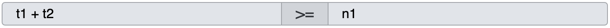

Geofilter
Hilfe
Auf dieser Webseite haben wir viele Klimadaten von über 1000 verschiedenen Wetterstationenauf der ganzen Welt gesammelt. Diese Daten helfen uns, das Klima und Wetter der verschiedenen Gebiete besser zu verstehen. Ihr könnt verschiedene Filter verwenden, um die Auswahl der Wetterstationen einzuschränken und damit auf bestimmte Fragen gezielter einzugehen.
Die Filter, die ihr einstellen könnt, basieren auf Durchschnittswerten von verschiedenen Klimadaten, wie zum Beispiel Temperaturen und Niederschläge. Wir haben zwölf Variablen für die Durchschnittstemperaturen von Januar bis Dezember (t1 bis t12) und zwölf Variablen für die Durchschnittsniederschläge von Januar bis Dezember (n1 bis n12). Außerdem gibt es zwei weitere Variablen: den alljährlichen durchschnittlichen Niederschlag (N) und die Durchschnittstemperatur (T).
| Jährlich | Jan | Feb | Mär | Apr | Mai | Jun | Jul | Aug | Sep | Okt | Nov | Dez | |
|---|---|---|---|---|---|---|---|---|---|---|---|---|---|
| Gesamtniederschlag (in mm) | N | n1 | n2 | n3 | n4 | n5 | n6 | n7 | n8 | n9 | n10 | n11 | n12 |
| Durchschnittstemperatur (in C˚) | T | t1 | t2 | t3 | t4 | t5 | t6 | t7 | t8 | t9 | t10 | t11 | t12 |
Mit diesen Variablen könnt ihr Rechnungen aufstellen, um Filter zu erstellen. Zum Beispiel könntet ihr einen Filter setzen, der nur die Ergebnisse anzeigt, bei denen die addierte Temperatur in C˚ von Januar und Februar (t1 + t2) größer ist als der Niederschlag im Januar (n1) in mm. Solche Filter helfen euch, die Wetterstationen zu finden, die euren Kriterien entsprechen.
Wenn ihr die Filter angewendet habt, werden die Ergebnisse in einer Liste und auf einer Weltkarte angezeigt. Ihr könnt auch die Klimadiagramme der verschiedenen Stationen einsehen, um mehr über das Klima und Wetter in diesen Gebieten zu erfahren.
Denkt daran, dass ihr mit diesen Filtern und Daten viele verschiedene Fragestellungen untersuchen könnt, also probiert verschiedene Kombinationen aus und seht, was ihr herausfinden könnt!